asg_taewa_3lite_samples: 11date: 2022-06-13 12:34:43.786574 | max: 712 min: 385 mean: 607 |
max: 65120 min: 42420 mean: 52333 |
max: 63.96 min: 58.78 mean: 60.52 |
max: 1840 min: 809 mean: 1453 | ||
| 1: 2022.03.26_10-35_asg_taewa_3lite_865b | cpu=35 pods=0 treads=60 sc_min=14 warmup=90 | Dura-tion s | qps | CPU % | Err | |
| 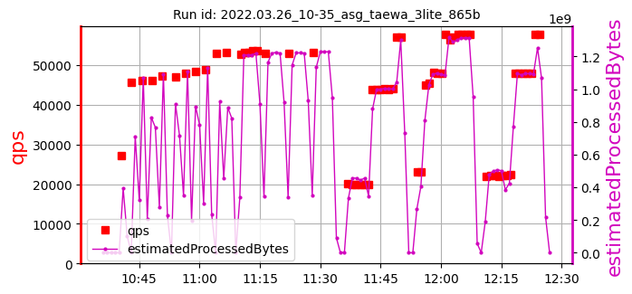 | 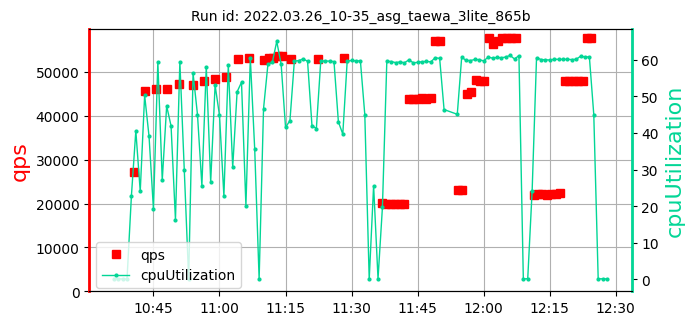 | 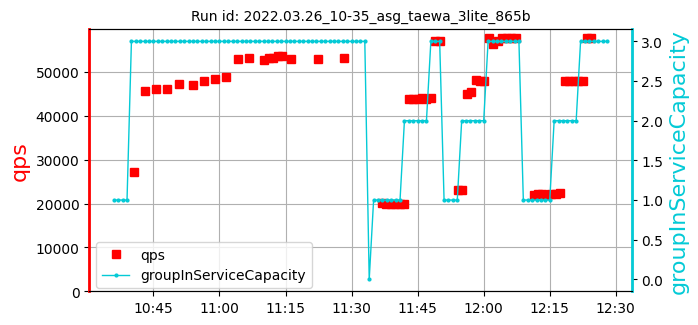 | [666, 414, 641] 574 | [53003, 53003, 53289] 53098 | [59.91, 59.63, 59.77] 59.77 | 1729 |
| 2: 2022.03.27_19-31_asg_taewa_3lite_0c47 | cpu=35 pods=0 treads=70 sc_min=14 warmup=90 | Dura-tion s | qps | CPU % | Err | |
| 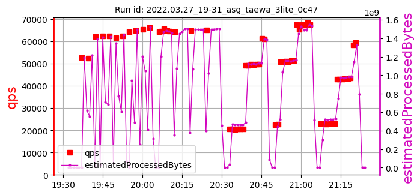 | 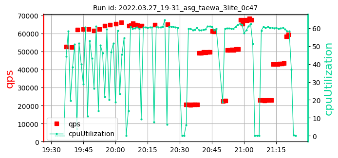 | 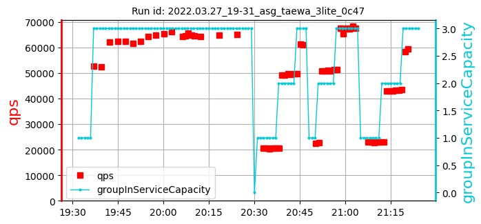 | [663, 408, 692] 588 | [64202, 64849, 65120] 64723 | [60.45, 60.6, 60.62] 60.56 | 1415 |
| 3: 2022.03.31_09-23_asg_taewa_3lite_41cf | cpu=35 pods=0 treads=70 sc_min=14 warmup=90 | Dura-tion s | qps | CPU % | Err | |
| 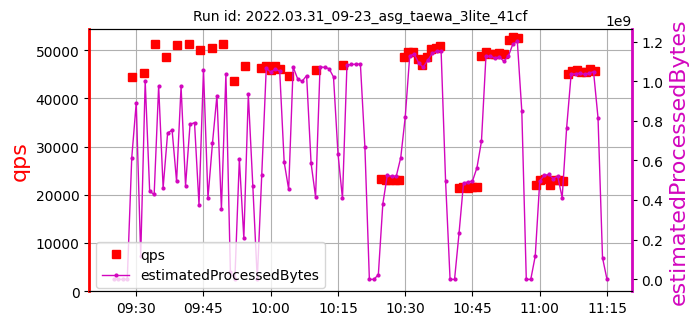 | 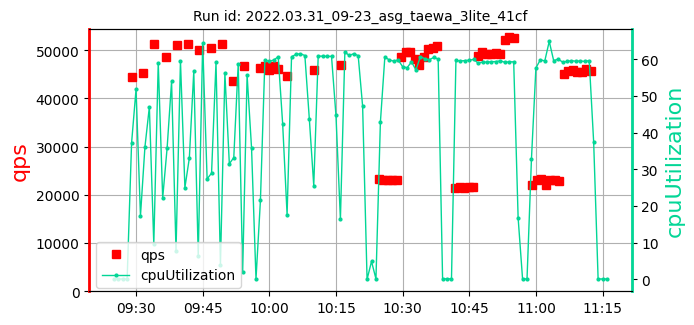 | 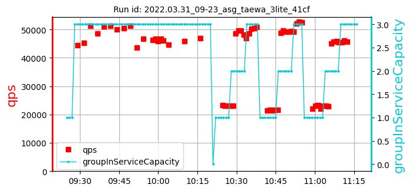 | [561, 607, 652] 607 | [44707, 45808, 46983] 45833 | [61.17, 60.8, 61.18] 61.05 | 809 |
| 4: 2022.03.31_19-33_asg_taewa_3lite_41cf | cpu=35 pods=0 treads=70 sc_min=14 warmup=90 | Dura-tion s | qps | CPU % | Err | |
| 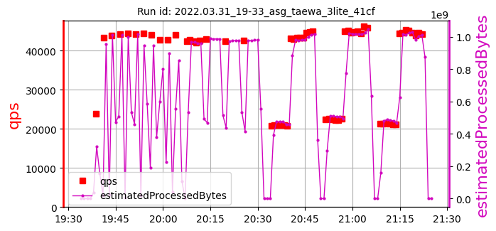 | 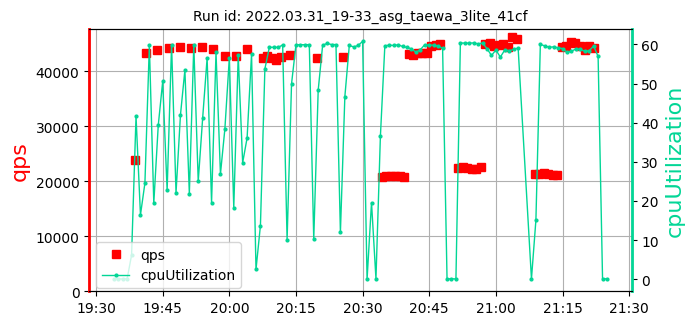 | 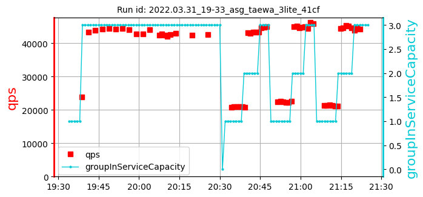 | [642, 627, 673] 647 | [42916, 42420, 42527] 42621 | [59.92, 60.01, 59.61] 59.85 | 1840 |
| 5: 2022.04.02_04-11_asg_taewa_3lite_41cf | cpu=35 pods=0 treads=70 sc_min=14 warmup=90 | Dura-tion s | qps | CPU % | Err | |
| 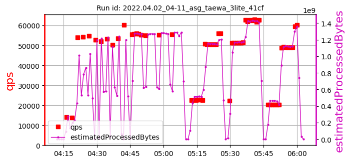 | 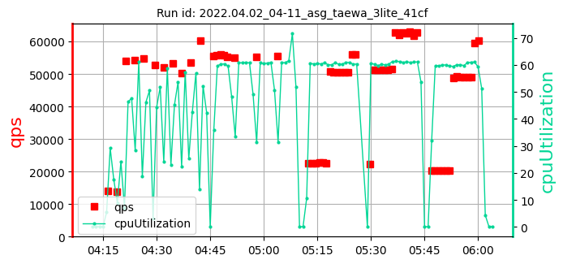 | 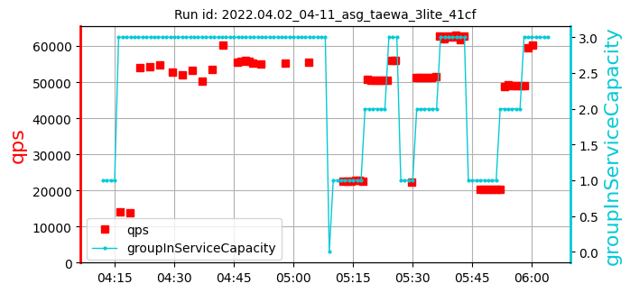 | [690, 436, 663] 596 | [55017, 55361, 55424] 55267 | [60.86, 60.68, 61.11] 60.88 | 1408 |
| 6: 2022.04.02_08-33_asg_taewa_3lite_41cf | cpu=35 pods=0 treads=70 sc_min=14 warmup=90 | Dura-tion s | qps | CPU % | Err | |
| 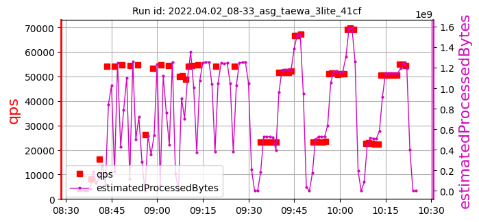 | 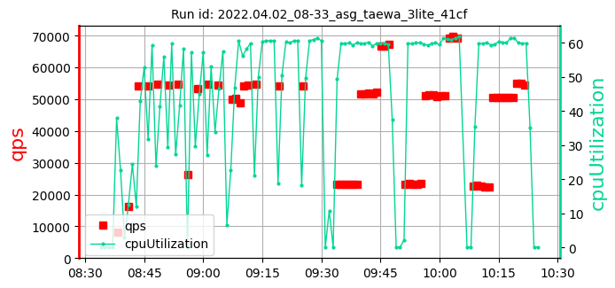 | 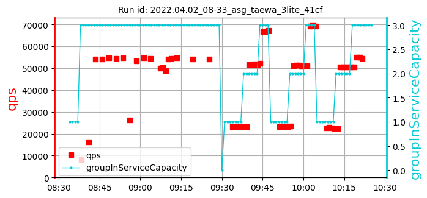 | [600, 585, 570] 585 | [54587, 54172, 54179] 54313 | [60.55, 60.33, 61.03] 60.64 | 1610 |
| 7: 2022.04.03_07-21_asg_taewa_3lite_41cf | cpu=35 pods=0 treads=70 sc_min=14 warmup=90 | Dura-tion s | qps | CPU % | Err | |
| 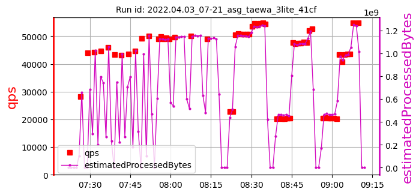 | 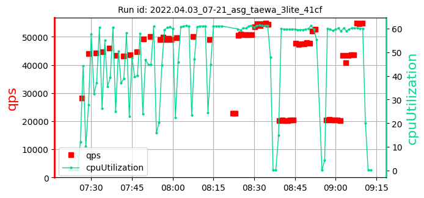 | 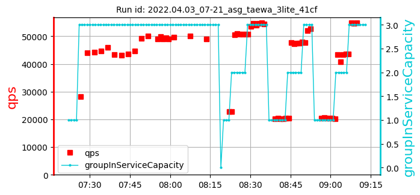 | [414, 640, 625] 560 | [49727, 50122, 49087] 49645 | [61.03, 61.04, 61.12] 61.06 | 1413 |
| 8: 2022.04.04_06-12_asg_taewa_3lite_41cf | cpu=35 pods=0 treads=70 sc_min=14 warmup=90 | Dura-tion s | qps | CPU % | Err | |
| 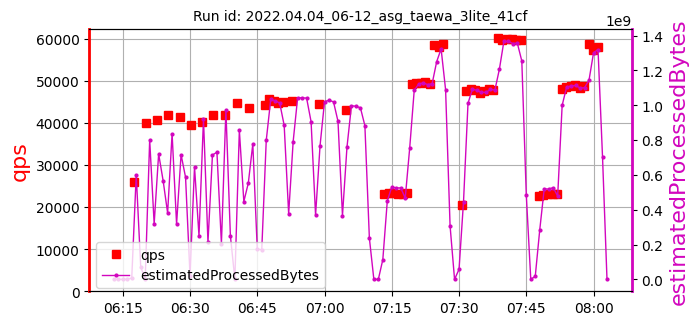 | 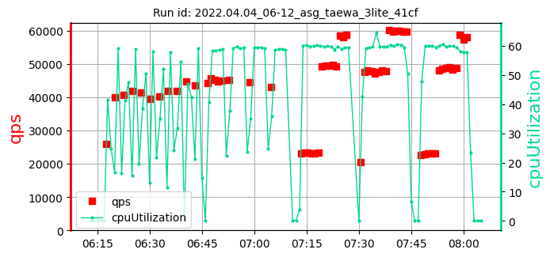 | 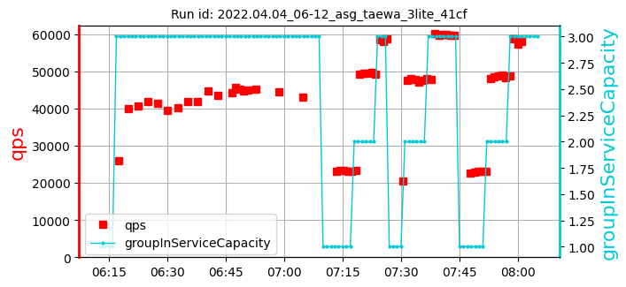 | [640, 385, 611] 545 | [45302, 44589, 43179] 44357 | [59.37, 59.5, 58.78] 59.21 | 1309 |
| 9: 2022.04.04_08-54_asg_taewa_3lite_41cf | cpu=35 pods=0 treads=70 sc_min=14 warmup=90 | Dura-tion s | qps | CPU % | Err | |
| 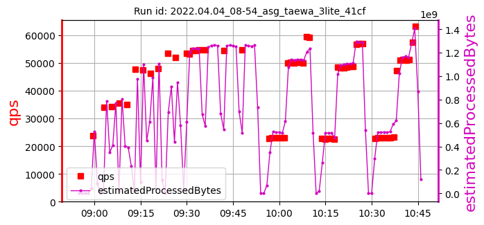 | 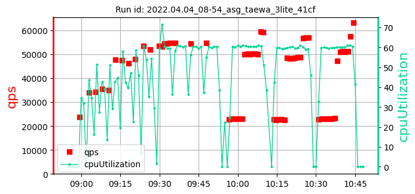 | 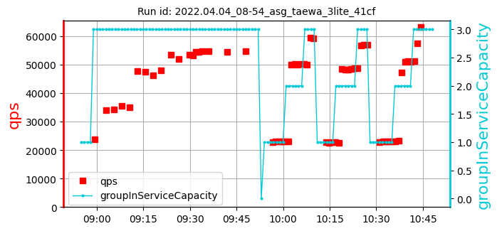 | [623, 608, 653] 628 | [54647, 54489, 54642] 54593 | [60.66, 60.05, 60.25] 60.32 | 1417 |
| 10: 2022.04.05_05-15_asg_taewa_3lite_41cf | cpu=35 pods=0 treads=70 sc_min=14 warmup=90 | Dura-tion s | qps | CPU % | Err | |
| 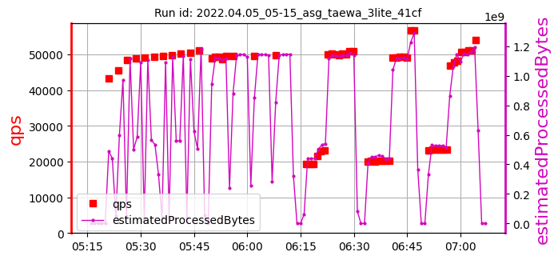 | 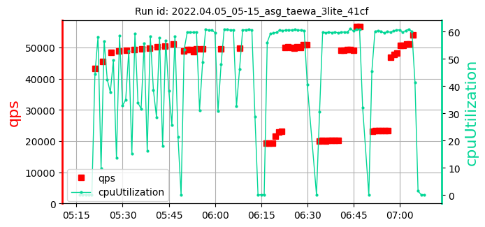 | 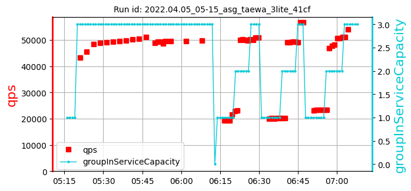 | [621, 666, 712] 666 | [49508, 49595, 49694] 49599 | [60.62, 60.68, 60.7] 60.66 | 1319 |
| 11: 2022.05.16_19-36_asg_taewa_3lite_d390 | cpu=35 pods=0 treads=70 sc_min=14 warmup=90 | Dura-tion s | qps | CPU % | Err | |
| 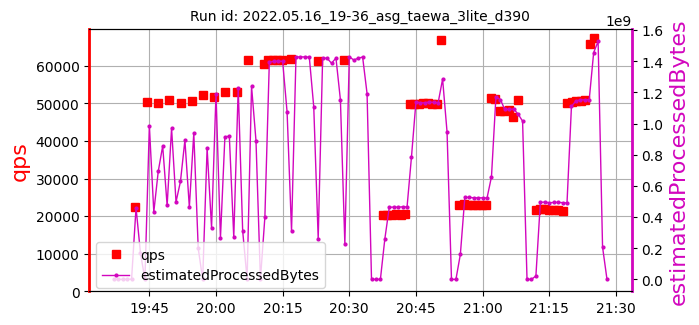 | 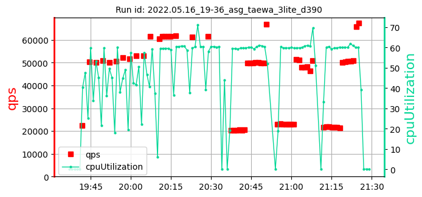 | 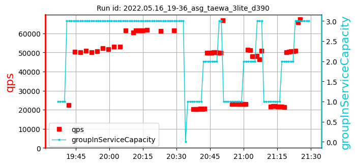 | [691, 676, 660] 676 | [61874, 61306, 61673] 61618 | [60.64, 63.96, 60.4] 61.67 | 1715 |
asg_taewa_3lite_samples: 11date: 2022-06-13 12:34:43.786574 | max: 712 min: 385 mean: 607 |
max: 65120 min: 42420 mean: 52333 |
max: 63.96 min: 58.78 mean: 60.52 |
max: 1840 min: 809 mean: 1453 |